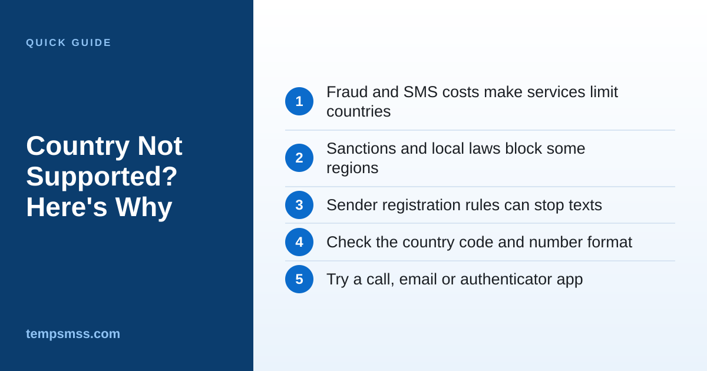

Country Not Supported for SMS Verification: Why and What to Do
"Country not supported for SMS verification" means the service has chosen not to send verification texts to phone numbers from that country. It is a business or legal decision on their side, not a fault with your phone. Usually the fix is to check that you picked the right country code, then use another verification method (a voice call, email or an authenticator app) or a number you own in a country the service supports.

What the error looks like
The wording changes from service to service, but the meaning is the same. You may see:
- "This country is not supported"
- "SMS verification is not available in your region"
- "We can't send a code to this number"
- "Invalid phone number" even though the number is correct
- A country drop-down where your country is simply missing
The last two are easy to misread. When a country is switched off, some forms don't explain why. They just refuse the number or leave the country out of the list.
Why services limit SMS verification by country
Sending a text costs money, and the price and risk differ a lot from one country to the next. Most services decide country by country, based on four main reasons.
SMS cost and fraud
Every verification text is paid for by the service. Criminals abuse this with SMS pumping fraud (also called toll fraud). They use bots to type phone numbers into sign-up forms, trigger thousands of code messages to number ranges at certain mobile operators, and take a share of the money those texts earn. This explanation of SMS pumping fraud from an SMS provider shows how it works.
The simplest defence is to stop sending to countries a service doesn't need. SMS providers give their customers country-level geo permissions for verification and advise them to keep countries they don't serve switched off. If your country was hit by a wave of pumping traffic, or simply isn't a market the company serves, it may be on the blocked side of that switch.
Sanctions and legal limits
Companies must follow the sanctions laws of the countries they operate in. In the US, the Treasury's Office of Foreign Assets Control runs sanctions programs for countries such as Cuba, Iran and North Korea. A company covered by those rules may not be allowed to serve users there at all, so the phone check is often the first place the block shows up. No setting or workaround on your side can change this, and you shouldn't try.
Other laws matter too: data protection rules, local licensing, or age and identity checks the service hasn't set up for your market.
Sender registration rules
Some countries require businesses to register before they can text local numbers. India, for example, requires the sender name and every message template to be registered and approved before messages can be sent. France, Australia and Singapore also have sender ID registration rules. If a company hasn't registered, its messages can be blocked or filtered, so many services leave the country off rather than send codes that never arrive.
The service doesn't operate there
Sometimes the reason is plain: the app or website hasn't launched in your country yet. Payments, content rights or support may not be ready, and the phone check is just where you hit the wall.
When a throwaway number is enough
Not every sign-up deserves your real number. If you only want to read a newsletter, try a forum or test your own app's SMS flow, and the service accepts numbers from the US, Canada, the UK or parts of Europe, sites that let you receive SMS online list free public numbers from those countries. Treat them as disposable. Anyone can open the page and read every code sent to them, so never use one for banking, your main email or two-factor login, and stick to what each service's terms allow. Numbers also come and go, so a public number won't help you get back into an account later.
Reason, sign and what helps
| Reason | Typical sign | What helps |
|---|---|---|
| Fraud or SMS cost limits | Your country is missing from the list, or the code never comes | Choose voice call, email or an authenticator if offered; ask support |
| Sanctions or legal limits | The whole service is unavailable, not just the code | Nothing on your side; follow the law and the service's terms |
| Sender registration rules | The form takes your number but no SMS arrives | Try a voice call; ask support if your country is planned |
| Service not launched there | Country missing from sign-up and app store | Wait for a launch or use a similar local service |
| Wrong country code picked | "Invalid number" for a number you know works | Fix the drop-down and the number format |
What to do, step by step
- Check the country drop-down. Many forms default to the US (+1) or guess from your IP address. Pick your real country before you type the number.
- Fix the number format. Enter the number without the leading 0 once the country code is set. A UK mobile written as 07700 900123 becomes +44 7700 900123. A US number such as (201) 555-0123 becomes +1 201 555 0123. A doubled or missing digit makes a valid number look "unsupported".
- Look for another method. Many services offer a voice call, an email code, an authenticator app or a passkey. Some let you skip the phone step completely. This guide on how to verify an account without a phone number covers the common options.
- Use a number from a supported country that you control. If you live abroad, travel often or have a second SIM, a number you own in a supported country is a fair choice for an account you plan to keep. Internet and VoIP numbers are often refused, though; see why a VoIP number is not accepted for verification before you pay for one.
- Contact support. Ask whether your country is supported or planned, and whether they can verify you another way. Give the exact error text and the country code you used.
What not to do
- Don't borrow random numbers for important accounts. A friend's number, a number from a forum post or a public number puts the account in someone else's hands. Whoever controls that number can reset your password later.
- Don't buy "verified accounts" or codes from strangers. These are often stolen, and they can be taken back at any time.
- Don't try to get around sanctions. If a company can't legally serve your country, changing your number or location breaks its terms and may break the law.
- Don't rely on a VPN. The block is usually tied to the phone number's country code, not your IP address. A VPN rarely fixes it and can trigger extra fraud checks.
When to contact support
Write to support if your country appears in the list but codes never arrive, if the error started after the service worked for you before, or if you need the account for work or school. A short message with your country, the exact error and the time you tried helps them check their logs. If your country is blocked for fraud reasons, they may be able to turn on a different method for you.
FAQ
Why does a service say my country is not supported for SMS verification? The company has switched off texts to that country, usually because of SMS fraud and cost, sanctions or local laws, sender registration rules, or because it doesn't operate there yet.
Will a VPN fix "country not supported"? Usually not. The check is normally based on the phone number's country code. A VPN changes your IP address, not your number, and may trigger extra security checks.
Can I use a number from another country? Yes, if it's a number you own and the service's terms allow it. For accounts you want to keep, never use a borrowed or public number.
Is "country not supported" permanent? Not always. Services add and remove countries as fraud levels, costs and laws change. Contact support to ask whether your country is planned.